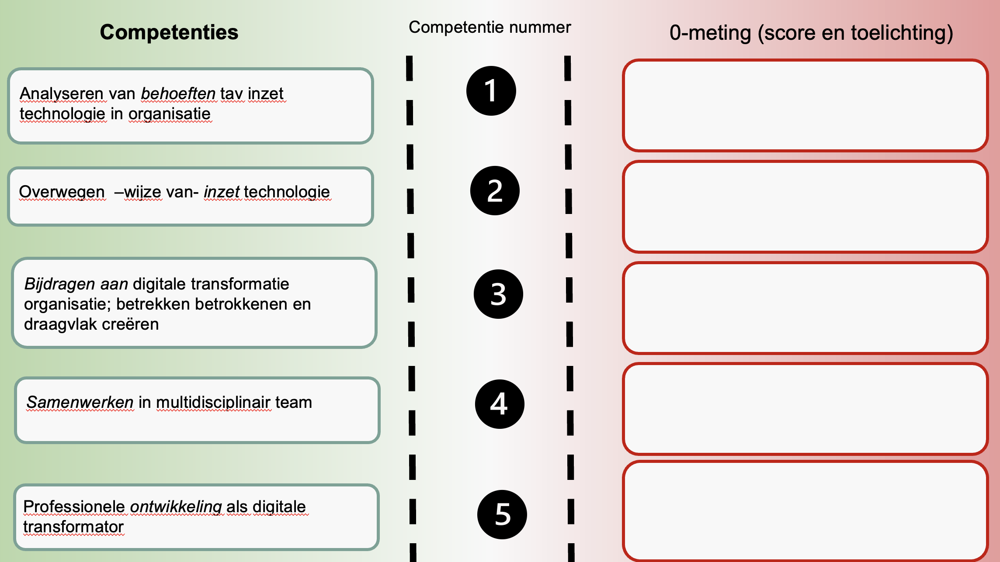

Smart Me
Mijn volledige reflectie op alles van de minor en mijn persoonlijke ontwikkeling.  0-Meting
1. In mijn studie en bij werken is er wel eens een nieuwe technologie naar voren gekomen waarbij gevraagd werd of die technologie werkende zou zijn. Er werd dan een kleine tijd economisch naar gekeken of het winstgevend was maar voor de rest niks. Niet gekeken of er betere technologieën zijn, niet gekeken of er kleine aanpassingen gedaan moeten worden. Niks, puur en alleen oppervlak gericht kijken naar. Is dit deel van de organisatie, misschien niet eens precies wetend wat het precies doet, winstgevend.
2. Weinig kennis over technologie en de inzet hiervan geleerd voor de start van de minor. Vond het vooral heel interessant om erover te leren omdat ik misschien dan wel niet per se toekomst in technologie zie ik vind het wel heel interessant. Interessant is een woord dat vaak terugkomt in mijn reflectie maar dat is ook echt hoe ik kijk naar de minor.
3. Elk bedrijf is wel online te vinden dus digitaal zijn ze allemaal wel aanwezig. Wat zijn nou juist de plekken waar ik persoonlijk kan bijdragen aan deze digitale wereld. Dat is wat ik hoop te leren in de minor.
4. Ik ben nooit buiten economische studies samenwerkingen aangegaan. Het lijkt me interessant discussies en samenwerkingen aan te gaan met mensen die met een ander oog kijken naar een vraagstuk of probleem. Wat zien zij wat ik niet zie? Waar denken zij aan bij dit vraagstuk? Ga ik daar de volgende keer ook aan denken?
5. Wat houdt digitale transformator in? Kan ik dit worden of misschien ben ik dit al? Het is een vage competentie waar ik benieuwd naar ben. Is het mogelijk om een digitale transformator te worden of was ik dat al?
Professionele ontwikkeldoelstelling
1. Mijn ontwikkelingsdoel op het gebied van analyseren van de behoeften ten op zichtte van inzet technologie in de organisatie was het vergaren van basiskennis. Is het mogelijk om binnen een half jaar zoveel te snappen dat ik weet waar technologische inzet mogelijk is. Weet ik wanneer de behoefte van het bedrijf om iets technologisch uit te breiden of starten wel echt een goed idee is?
2. Een minor die misschien niet mijn kennis voor mijn werkveld verbreedt of versterkt maar wel mijn algemene kennis. De kennis om in ieder geval te begrijpen wat technologie kan doen. Dat is hetgene wat ik wil leren in de minor.
3. Zoals ook al geschreven in de 0-meting: ik wil kijken wat mijn persoonlijke bijdrage aan een digitale onderneming kan zijn. Welke rol kan ik innemen die helpt bij digitale aanwezigheid, goede communicatie of misschien zelfs programmeren?
4. Net als in de 0-meting wil ik graag leren van de blik die andere mensen op een vraagstuk of probleem hebben. Ik ben benieuwd of ik na de minor met een andere blik naar mijn normale plannen zou kijken. Heb ik dingen over het hoofd gezien? Wat kan ik verbeteren om mijn rol in een samenwerking of in een team in te nemen? Hoe kan ik mijn mening laten horen en daarnaast veel leren van anderen?
5. ‘De integrale herinrichting van een organisatie met behulp van digitale technologieën, zodat andere verdienmodellen mogelijk worden'. Wat betekent dat? Kan ik nieuwe verdienmodellen bedenken of verbeteren omdat ik heb deelgenomen aan deze minor? Ik ben benieuwd of er nieuwe ideeën komen en naar nieuwe invalshoeken op vraagstukken worden gekeken wanneer ik deze minor heb afgerond.
Tussentijds/Peerfeedback
1. 7 Mijn groepsgenoten vinden mij oplettend en goed luisterend ondanks mijn gebrek aan kennis op het gebied van technologie. Ik waardeer dit compliment enorm en denk dat het redelijk aansluit op mijn persoonlijke eigenschappen. Ik vraag graag en veel want zodra ik ergens nieuwsgierig naar ben wil ik er alles over weten.
2. 6,25 Mijn groepsgenoten vinden dat ik de potentie van technologieën begin te snappen. Persoonlijk denk ik dat ik nog veel kan leren over de mogelijkheden die technologieën hebben en die mogelijk toepasbaar zijn daadwerkelijk te kunnen toepassen.
3. 6,5 Mijn groepsgenoten vinden dat ik betrokken ben bij het project en dat ik betrokken stakeholders goed informeer over voortgang en vragen om bezoeken. Persoonlijk vind ik dat ik nog wel meer kon doen in het beter communiceren met groepsgenoten en stakeholders zoals beter communiceren over wat te doen en hoe verder te gaan.
4. 7,25 Mijn groepsgenoten vinden dat ik een betrokken en initiatiefrijk lid ben van het team. Persoonlijk denk ik dat er binnen een samenwerking altijd verbeterpunten blijven zitten. Maar ik waardeer dat mijn groepsgenoten mij een waardevol teamlid vinden en denk ook dat ik dit ook zeker ben.
5. 6,75 Mijn groepsgenoten vinden mij nog onwetend over mogelijkheden van technologieën maar wel snellerend. Ik sluit mij hier volledig bij aan. Het klopt dat ik nog steeds slecht weet welke mogelijkheden er zijn maar ik vind dat ik hier wel al grote stappen in gezet heb.
Feed Foward of evaluatie wat in de toekomst/ Einde project
1. Ik kon met enige moeite identificeren wat de opdrachtgever wilde en ik heb zelfs geholpen met het ontwikkelen van deze technologie. In de toekomst denk ik dat wanneer een bedrijf zegt. “We moeten bijvoorbeeld AI inzetten”, ik weet wat ik moet vragen om daadwerkelijk te weten wat zijn verwachtingen en doelen zijn. Daarmee kan er dan worden gekeken of de organisatie wel echt wil wat ze zeggen dat ze willen op technologisch gebied. Het is heel makkelijk om dingen te roepen en al helemaal wanneer het om grote moeilijke begrippen gaat. Maar wat is het doel nou eigenlijk? Dát is hetgene wat je moet identificeren in een onderneming voordat je tonnen of miljoenen gaat investeren in onzin.
2. Beetje hetzelfde als bij vorig punt. Je dient er echt achter te komen of een onderneming wel echt wil wat die zegt dat die wil. Daarna moet je nog, nadat de technologie er ook daadwerkelijk is, erachter komen hoe je het daadwerkelijk gaat implementeren in de onderneming.
3. Het betrekken van stakeholders is mij al goed afgegaan in de studie maar ook daar zitten altijd verbeterpunten voor de toekomst. Het vinden van mijn bijdrage aan de digitale transformatie is nog moeilijk te bepalen. Ik denk persoonlijk dat het heel erg projectafhankelijk is wat voor rol je kunt en zou moeten innemen.
4. Vond het heel interessant om niet alleen in dit project maar ook in de klas deel te nemen aan een groep met verschillende invalshoeken. Ik heb geleerd dat je veel kunt leren over een teamgenoot wanneer je doorvraagt naar zijn of haar redenen. Het leren van anderen, en al helemaal in een multidisciplinair team, is iets waar nog vele stappen in gezet dienen te worden maar ook al zeker gezet zijn. Grootste leermoment is leren van andere meningen voor je jou eigen deelt.
5. Ben ik een kernpunt van een digitale transformator? Nee, Ik denk dat je niet jezelf kunt omschrijven als een digitale transformator wie dat je dan ook bent. Wel kan ik zeggen dat ik beter begrijp hoe technische personen denken en dat ik kan aansluiten bij een meeting of gesprekken wanneer basiskennis van verschillende technische programma’s en problemen worden besproken. En ik begrijp een ander beter: een groepsgenoot van mij vertelde dat veel mensen coderen magie vinden. Ik ben niet een professional op het gebied ik zou het zeker ook niet alleen kunnen bouwen maar ik snap wat er gebeurt. Dit vind ik het belangrijkste leerproces van mijn minor. Ik kan nog steeds zeggen dat ik geen toekomst zie in het werkgebied maar ik heb iets interessants geleerd en daar wil ik alle betrokkenen hartelijk voor bedanken!